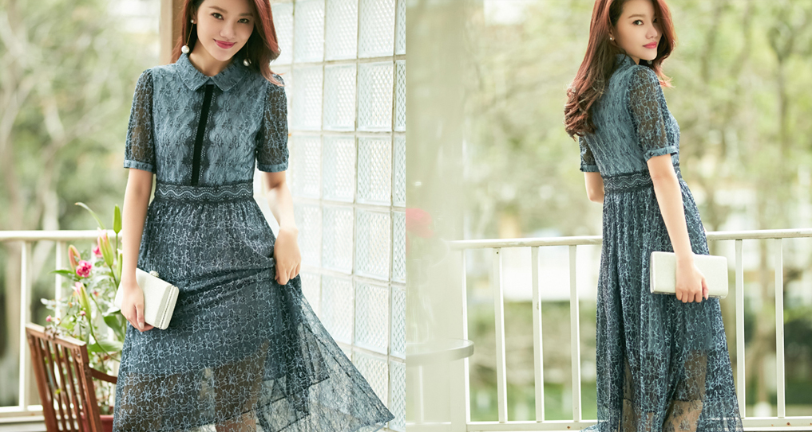

首页：
新闻动态>
春日里的连衣裙，仙气又撩人
新闻动态
春日里的连衣裙，仙气又撩人
薄纱,就像少女时代的秘密-样,欲说还休,一旦被笼罩,便如同落入了满是迷雾的仙境,走动之间,轻柔的裙摆随风摇曳,曼妙身姿若隐若现。
花朵是“仙女裙”的又-经典元素,集合了时下流行的芭蕾粉。山茶白之后。成片的花朵不仅没有拥挤的视觉感,反而错落有致,显得尤为清新。同时,玖姿设计师又别出心裁地将花朵攀岩生长的过程展示于裙身之上。连结的花叶加深了相互羁绊,能给穿着者带来更为跳脱生动的体验感。

蕾丝又何尝不是“仙女”的标配呢,得益于面料质感及立体剪裁,连衣裙兼具了柔软与挺括,而喇叭袖口的设计则体现了现代宫廷之感,既古典又浪漫。把蕾丝作为点缀亦是“仙女裙”的惯用手法,雪纺衬衫式的上身设计具有较强的职业感,而蕾丝绣花裙摆的配合,提升了整体的精致度,从而突出了女性魅力。